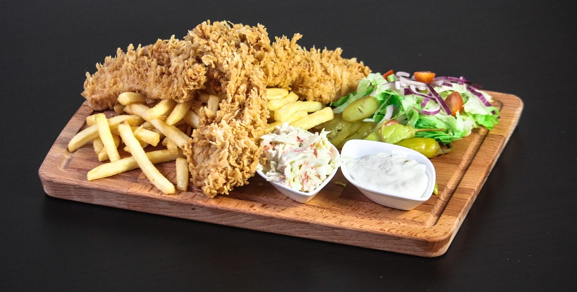

Garlic butter chicken Bites
Home
Garlic Chicken

Garlic Butter Chicken Bites
Prep time: 10 min
Cook time: 15 min
Serves: 2-3
Ingredients:
2 ichicken breasts, cut into bite-sized pieces
3 tbsp unsalted butter
4 garlic cloves, minced
Salt and pepper, to taste
<1>1 tsp paprika (optional)
1 tbsp chopped parsley (fresh or dried)
Lemon wedges (for serving)
Instructions:
Season chicken with salt, pepper, and paprika.
Heat 2 tbsp butter in a skillet over medium-high heat.
Add chicken and cook for 5-7 min until golden and cooked through.
Lower heat to medium. Add remaining butter and garlic.
Stir for 1-2 min until chicken is coated in garlic butter.
Sprinkle with parsley and serve with lemon wedges.